Виды кузовов легковых автомобилей
Характеристики и цели использования автомобиля отражаются в самых разных его деталях, в том числе и несущей системе. Кузов автомобиля выполняет не только декоративную, но и практическую, коммерческую функцию. Например, для большей грузовой вместительности используется кузов типа универсал или пикап, для перевозки пассажиров используется минивэн и так далее. Хотя современные автопроизводители все чаще пытаются совместить в одном кузове параметры нескольких типов автомобилей.
Типы кузовов автомобилей
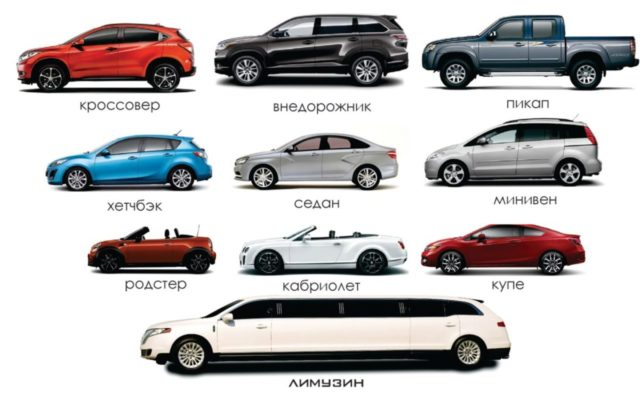Прежде чем детально говорить о разных типах кузовов, следует упомянуть об их общей классификации. Все они делятся по компоновке на:
- трехобъемные;
- двухобъемные;
- однообъемные;
Трехобъемная конструкция предполагает разделение корпуса на моторный отсек, салон автомобиля или пассажирский отсек и багажное отделение. К такой компоновке относятся классические седаны. Характерным отличием является небольшой багажник, но улучшенная жесткость из-за дополнительных перегородок между отделениями.
Двухобъемные конструкции предполагают наличие только моторного отсека и пассажирского. Салон автомобиля совмещен с багажным отделением. Это дает преимущество в перевозке грузов. Классическим представителем такой компоновки является универсал.
Однообъемная конструкция характерна для минивэнов, микроавтобусов и других пассажирских автомобилей. Большую часть занимает салон, который практически сливается с багажным отделением и плавным скатом моторного отсека.
Также несущую систему автомобиля подразделяют на рамную, с несущим и полунесущим кузовами.
Теперь разберем типы кузовов в разных объемах.
Трехобъемные
Седан
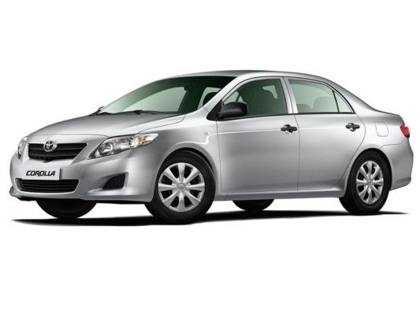Кузов типа седан считается классическим. Отличительной чертой является четкое выделение моторного отсека и багажного отделения. Также имеется два ряда сидений в салоне и четыре двери. Кузов имеет четкую геометрию и довольно просторный салон. Такой автомобиль будет удобен для перевозки пассажиров и небольшого количества груза. Также седаны разделяются на подклассы. Например, маркировка «L» (Long) указывает на удлинённый кузов у седанов бизнес-класса.
Купе
Дизайн кузова типа купе предполагает наличие только двух удлиненных дверей, одного или двух рядов сидений и закрытой крыши. В некоторых моделях для заднего ряда сидений выделяется довольно мало пространства. Крыша плавно переходит в багажник.
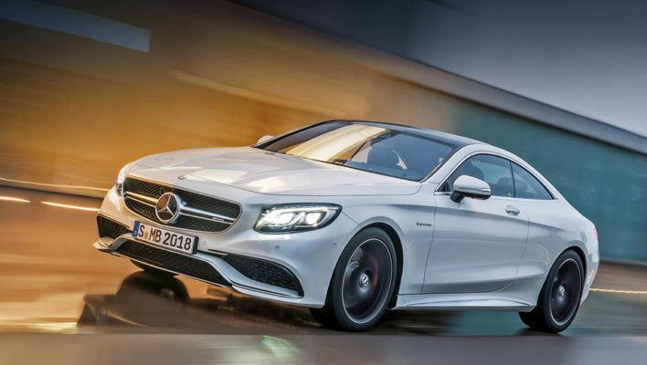Автомобили с таким типом кузова больше подходят для индивидуальных поездок, поэтому они относятся к классу престижных автомобилей. Хорошие аэродинамические свойства кузова в сочетании с мощным мотором дают автомобилю явные спортивные характеристики. Такие авто подчеркивают индивидуальность и престиж владельца.
Кабриолет
Кабриолет относится к классу автомобилей с открывающейся или откидной крышей. Крыша может быть жесткой или мягкой. Отличительные черты кабриолета – это две удлиненные двери и один или два ряда сидений. В свою очередь, класс кабриолетов подразделяется на несколько подклассов, таких как фаэтон, родстер, ландо, брогам.
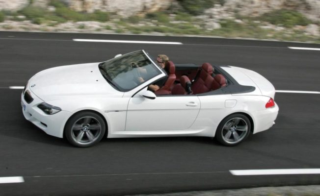Фаэтон
Изначально кузов фаэтон имел откидную мягкую крышу по принципу классического кабриолета. Позднее термин эволюционировал. Сейчас этот класс относится чаще к представительским автомобилям.
Родстер
Кузов родстер также имеет открытый верх со съемной крышей или вообще без нее и один ряд сидений. Чаще всего в этом классе выступают спорткары.
Ландо
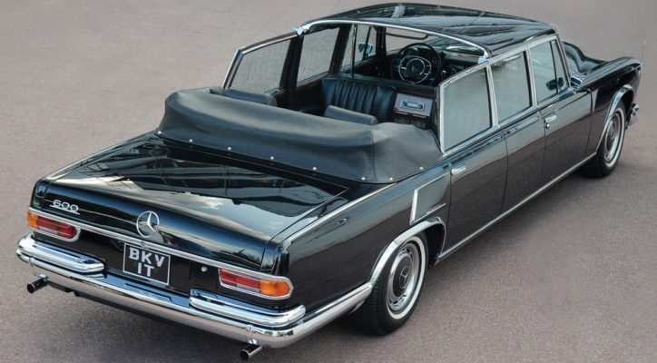Этот тип кузова выглядит очень эстетично и престижно. Отличается тем, что крыша над задними сиденьями является откидной или вовсе отсутствует, а над передними сиденьями она полноценная.
Брогам
Брогам, наоборот, имеет открытые передние сиденья и закрытый задний ряд. Это также представительский класс автомобилей. Пассажирская зона четко разделена с водительской.
Пикап
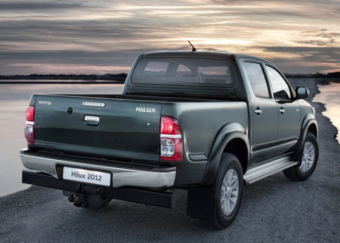Отличительная черта пикапа – открытый багажник. Он создавался как коммерческая машина для перевозки различных грузов. Особенно популярны такие автомобили в Америке и странах Европы. Как рабочая машина пикапы оснащаются полным приводом и мощным мотором, но лишены изысков в салоне. Зачастую это двухдверные, но нередки и четырехдверные пикапы.
Лимузин
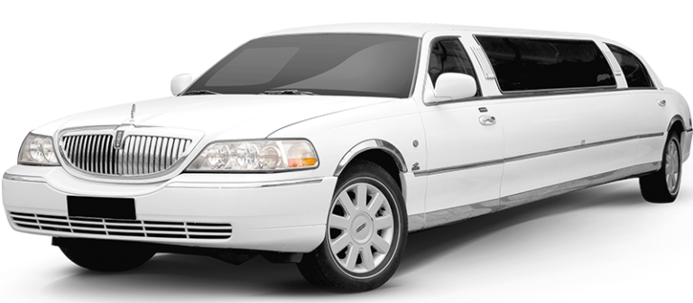Данные автомобили относятся к представительскому классу с повышенным уровнем комфорта для пассажиров. По геометрии кузов можно сравнить с седаном, но только он имеет удлиненную колесную базу. Также для лимузина характерна перегородка между водителем и пассажирским салоном. Он отличается очень широким и просторным салоном с несколькими рядами сидений или широкими сиденьями типа диванов. Из-за своей удлиненной базы лимузины не очень практичны для каждодневных поездок по улицам города. Чаще их используют на торжествах или для перемещения высокопоставленных лиц.
Двухобъемные
Универсал
Кузов универсал снискал популярность за свою практичность. Салон является продолжением багажного отделения. Задняя дверь откидывается вверх. Он объединяет в себе функции пассажирского и грузового автомобиля с двухобъемным кузовом. Как правило, багажное отделение можно увеличить, сложив задний ряд сидений.
Хэтчбек
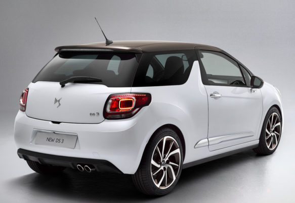Хэтчбек схож с универсалом, но имеет укороченную базу и наклонную крышу, которая плавно переходит в багажник. Отличается большим багажным отделением. Хэтчбеки чаще всего выбирают как городской автомобиль. Также может быть выполнен в кузове купе, то есть иметь две боковых двери.
Лифтбек
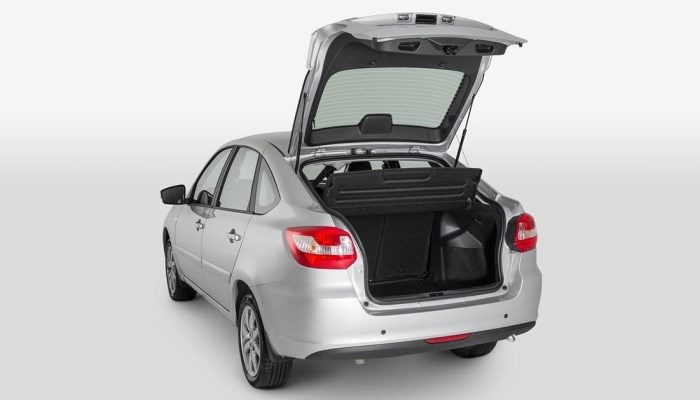Лифтбек является средним кузовом между седаном и хэтчбеком. Главное отличие и преимущество – откидная задняя дверь багажника, которая открывается вместе со стеклом. Задние сидения также складываются, увеличивая грузовое пространство.
Внедорожник
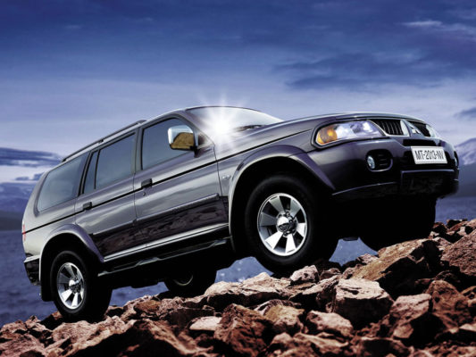Внедорожники отличаются рамной несущей конструкцией, высоким клиренсом, полным приводом и мощным мотором. Они предназначены для езды по бездорожью в труднопроходимых местах. Рамная конструкция делает корпус жестким и прочным. Большой салон объединен с большим багажным отсеком.
Кроссовер(CUV)
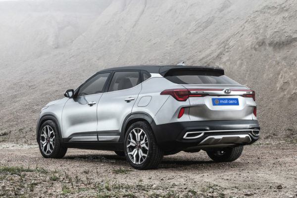Кроссовер (CUV — Crossover Utility Vehicle) объединяет в себе характеристики нескольких автомобилей. Кроссоверы имеют покатую крышу, плавно переходящую в багажное отделение, высокий клиренс и полный привод. Как правило, полный привод не постоянный, а подключаемый. Кузов имеет куда меньшие габариты, чем у внедорожника. Он хорошо адаптирован для езды по городу, но по проходимости не может равняться с полноценным внедорожником.
Фургон
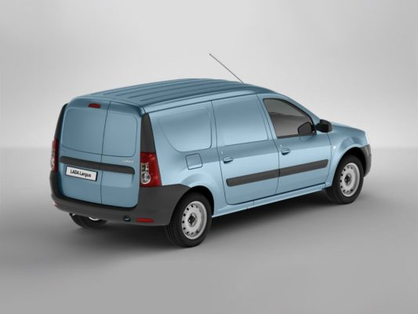Данный кузов предназначен для перевозки грузов, но его нельзя назвать полноценным грузовым автомобилем. Это среднее между легковым и грузовым авто. Имеет высокий и большой багажный отсек без окон. Фургон адаптируется под разные цели, например, как медицинский автомобиль, но чаще всего коммерческий.
Однообъемные
Однообъемные кузова представляют собой цельный корпус. Моторный отсек, салон и багажное отделение сливаются в одном блоке.
Минивен
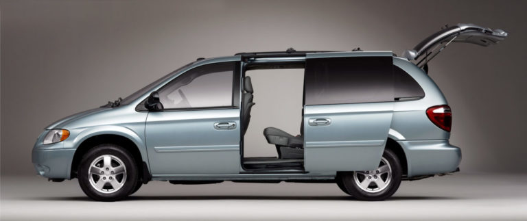Минивэн имеет большие габариты пассажирского отделения. Длина кузова может достигать 4,5 метра. Большой объем салона позволяет поместить дополнительный ряд сидений и обеспечить до восьми посадочных мест. Такой автомобиль прекрасно подойдет для большой семьи.
Компактвен
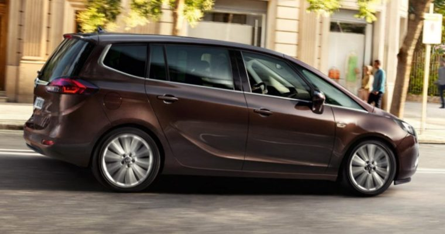\Кузов компактвэна значительно меньше, чем минивэна, но также может вмещать три ряда пассажирских сидений. Имеет уменьшенный багажный отсек.
Микровен
Микровэн также имеет небольшие габариты, этим он выигрывает в маневренности. Как правило, имеет дверь типа купе, укороченный моторный отсек, высокий и комфортный салон.
Кроме названных типов кузовов существуют несколько более экзотичных вариантов, таких как:
- тарга
- фастбек
- таун-кар
- хордтоп
Они отличаются от седана или кабриолета лишь несколькими особенностями. Например, хардтоп имеет открытые стекла без центральной стойки. Это значительно снижает жесткость кузова, но добавляет элегантности.
Автопроизводители стремятся удовлетворить желания каждого клиента. Как видно, вариантов кузовов очень много. На современном рынке можно заметить тенденцию сделать авто более универсальным, объединив в нем многие характеристики, но классические типы кузовов также остаются в моде.